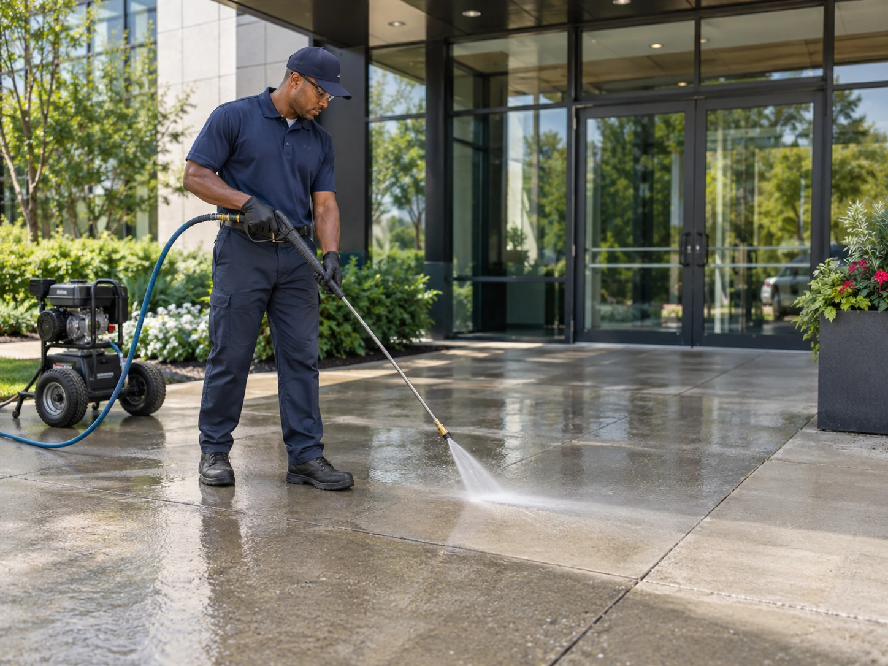
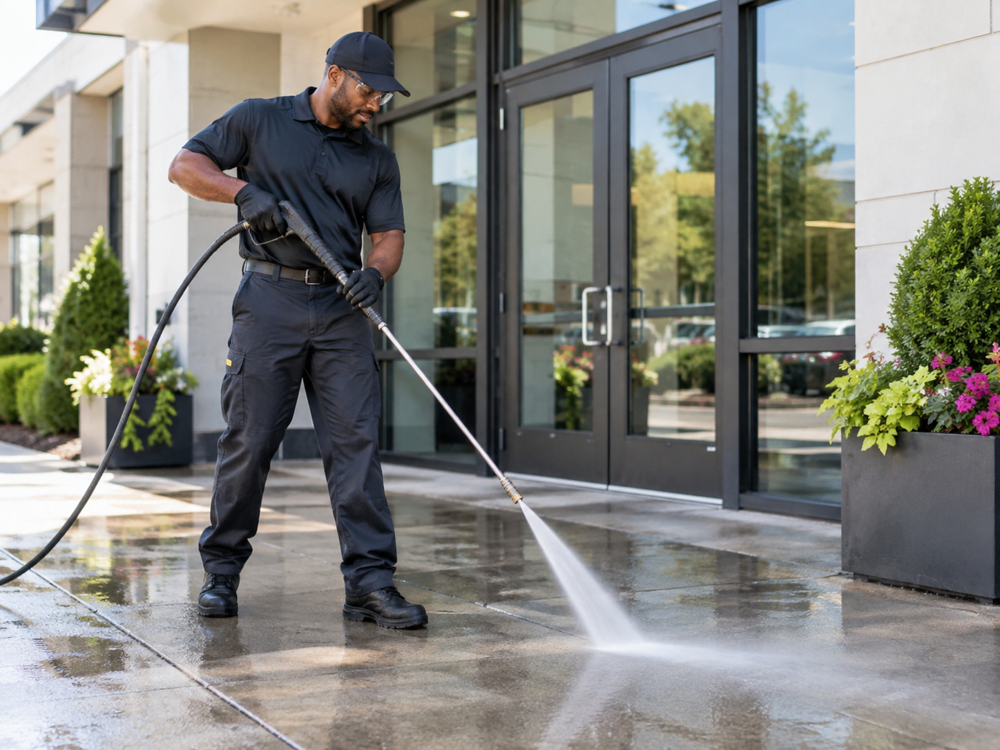
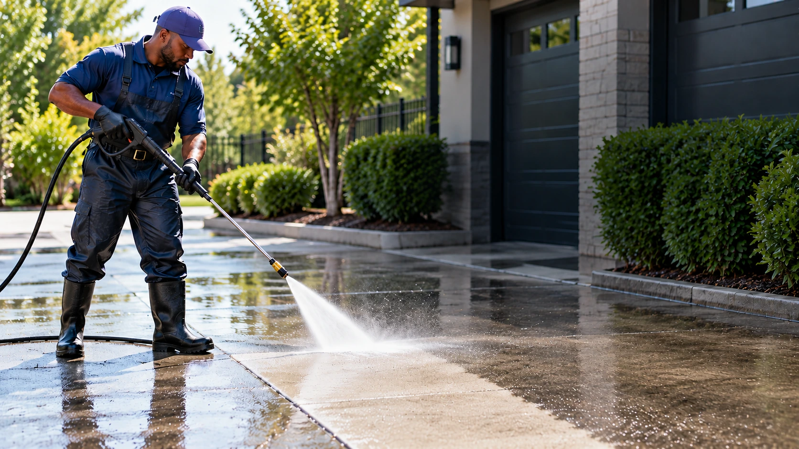
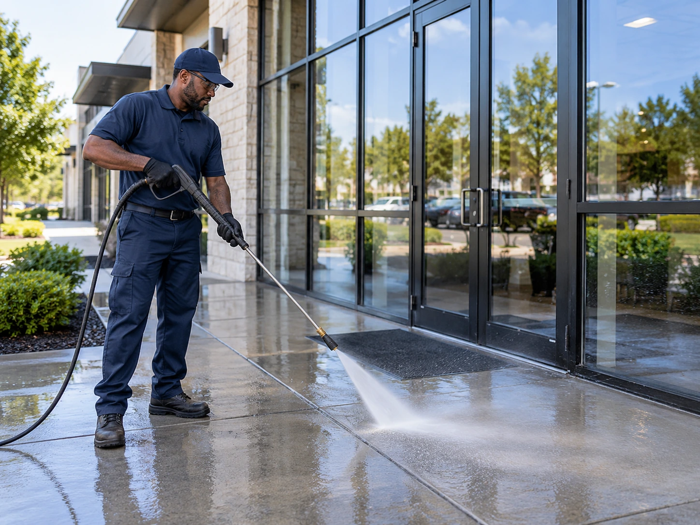
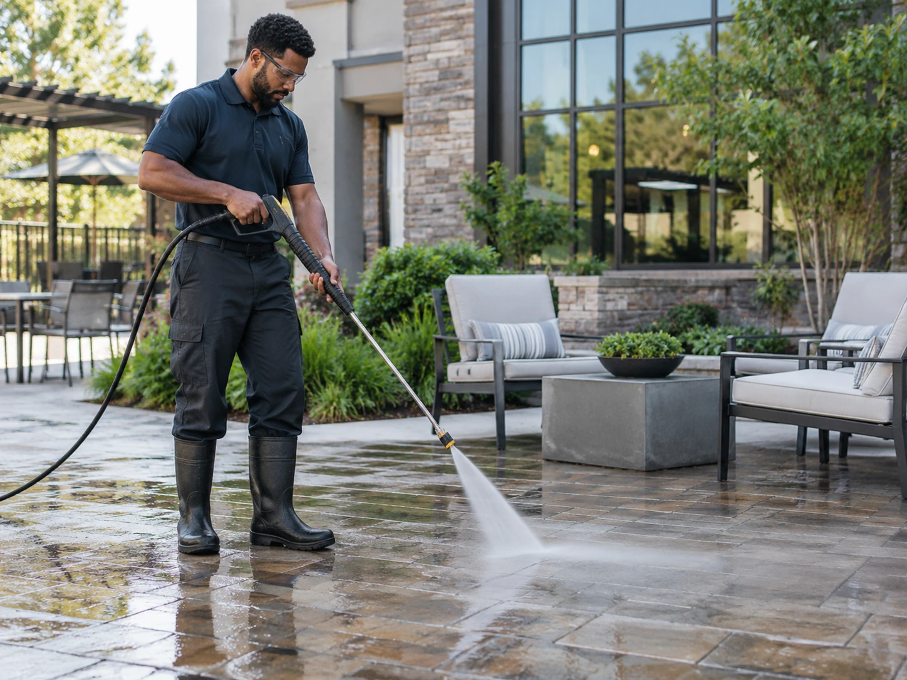
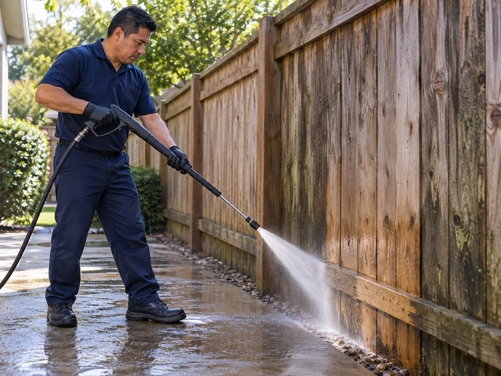
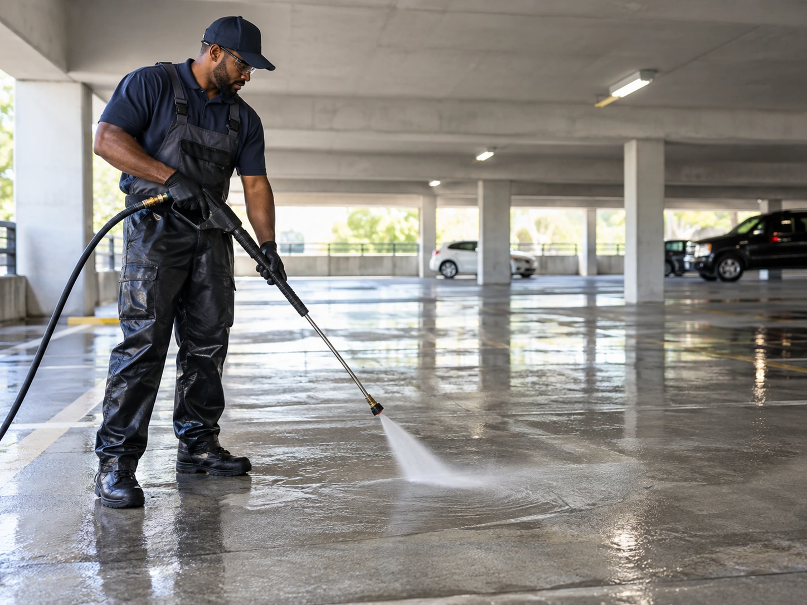
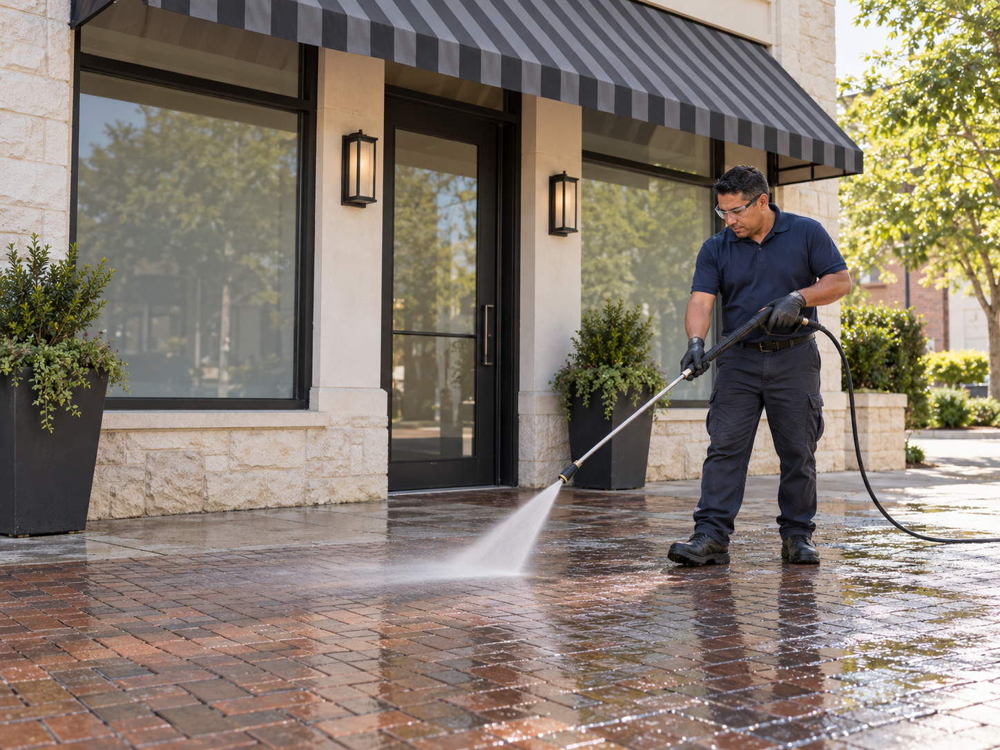

Power Washing for Exterior Surfaces
Power washing removes dirt, grime, and buildup from suitable exterior surfaces, including concrete, sidewalks, driveways, patios, and storefronts. Paradigm Janitorial Services serves Los Angeles County and San Bernardino County, with the method chosen for the surface and site conditions.
Surfaces We Clean
Concrete, parking areas, siding, patios, fences, garage floors, and storefronts each need the method that fits the material.

Driveways and Parking Areas

Building Exteriors and Siding

Patios and Decks

Fences and Walls

Garage Floors

Storefronts and Signage
Where Power Washing Makes a Difference
Different surfaces and buildup need different pressure, technique, and preparation.
Surface Renewal
Power washing can strip away years of grime and restore the natural look of brick, wood, or stone surfaces.
Siding Restoration
Remove dirt, mold, and algae buildup from siding to refresh the exterior.
Roofs and Gutter Cleanse
Clear debris and moss where appropriate to support drainage and exterior maintenance.
Pathway Clearing
Remove oil, dirt, and stains from walkways and driveways.
Deck Rejuvenation
Deep clean decks and patios affected by weather and daily use.
Parking Lot Cleanup
Address trash, oil stains, tire marks, and spills in parking areas.